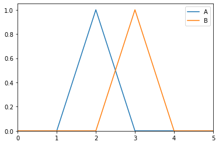
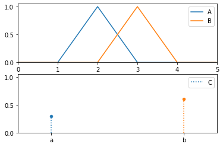
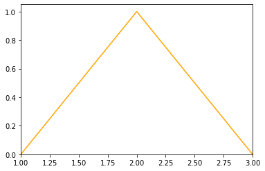

Plot¶
- class floulib.Plot¶
Bases:
objectThis class contains methods to plot various object.
- ax = None¶
The Axes of the subplot.
- plot(nrows=1, ncols=1, **kwargs)¶
Generic plot method
- Parameters:
nrows (int, optional) – Number of rows of the plot. The default is 1.
ncols (int, optional) – Number of columns of the plot. The default is 1.
**kwargs –
- For
Discrete: index: index of the plot. The default is 0.
xlim: x-limit for the plot. The default is None.
ylim: y-limit for the plot. The default is [0, 1.05].
coeff: coefficient used for scatter plot. The default is 0.25.
scatter: if True scatter plot is used otherwise conventional plot is used. Default is True.
any keyword argument accepted by matplotlib.scatter if scatter is True or by matplotlib.plot otherwise.
- For
- For
Multilinear: index: index of the plot. The default is 0.
xlim: x-limit for the plot. The default is None.
ylim: y-limit for the plot. The default is [0, 1.05].
vlines: if True, dashed vertical lines are plotted for each point. Default is False.
any keyword argument accepted by matplotlib.plot.
- For
- For
RuleorRules: xlim: x-limit for the plot. The default is None.
ylim: y-limit for the plot. The default is None.
implication: if True, an implicative view of the rule is considered for plotting the support, otherwise conjunctive view is considered. Default is False.
any keyword argument accepted by shapely.plotting.plot_polygon.
- For
- For
Smiley: index: index of the plot. The default is 0.
- For
- For
Variable: index: index of the plot. The default is 0.
any keyword argument accepted by the type of the variable.
- For
- Returns:
The plot.
- Return type:
- add_plot(other=None, **kwargs)¶
Adds a plot to a plot.
- Parameters:
- Raises:
Exception – Raised if the parmeter other is not provided.
- Returns:
The plot.
- Return type:
Example
>>> from floulib import Discrete, Triangle >>> A = Triangle( 1, 2, 3, label = 'A') >>> B = Triangle(2, 3, 4, label = 'B') >>> A.plot(xlim = [0, 5]).add_plot(B)
>>> C = Discrete(('a', 0.3), ('b', 0.6), label = 'C') >>> A.plot(rows = 2, xlim = [0, 5]).add_plot(B).add_plot(C, index = 1)
- color(color)¶
Sets the color of the plot.
- Parameters:
color (matplotlib.colors) – The color.
- Returns:
The multilinear fuzzy subset.
- Return type:
Example
>>> from floulib import Triangle >>> A = Triangle( 1, 2, 3) >>> A.color('orange').plot()